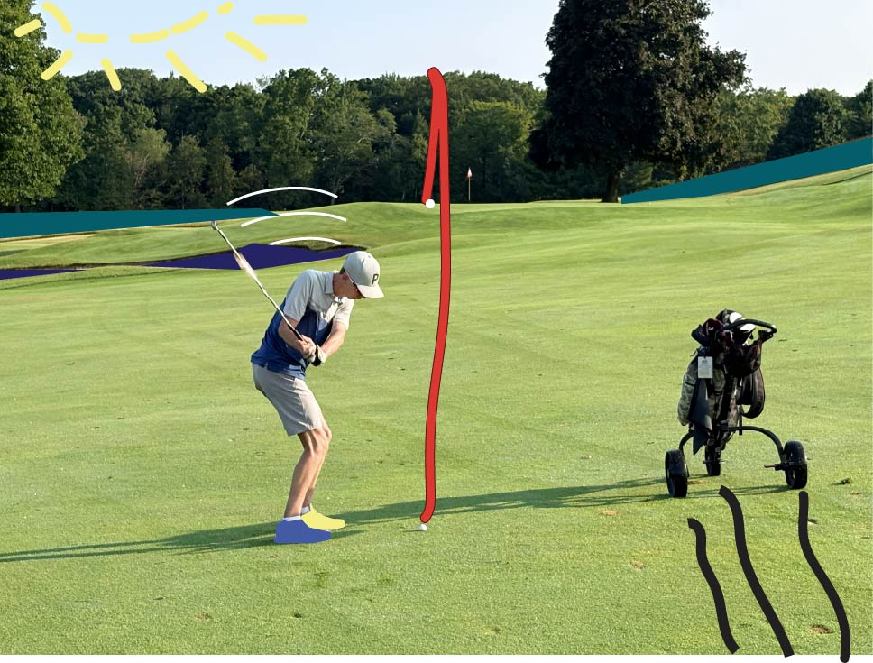
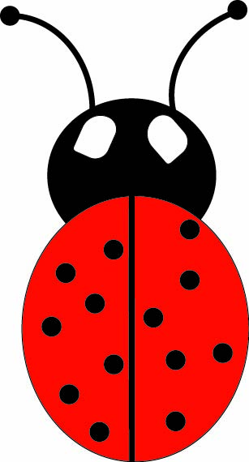

Photoshop Showcase

Pumpkin shape
Why I chose this image: I chose this image because we were designing our own pumpkin in class. You got to choose the color and the shapes you got to use.
Illustrator skills used: The Photoshop skills I used to create this image is the elipse tool. The star tool I then changed to have 3 side. The pen tool to create the mouth. And the gradient tool to show the different colors to really give the pumpkin a accurate depiction.

Illustrator brush image
Why I chose this image: I chose this image because it was a good image to be creative on. I have this picture form when I was golfing at Belvedere Golf Course in Charlevoix, Michigan this past summer.
Illustrator skills used: The IllustraTOR skills I used to create this image is the brush tool as well as the pen tool to give the image a creative version that the plain image by it's self.

Illustrator animal
Why I chose this animal: I chose this animal because it would be fun to create it. I liked giving this bug a good and accurate look.
Illustrator skills used: The Illustrator skills I used for this image was the elipse tool. I used the pen tool as well as the brush tool for this project.
illustrator logo
Why I chose this logo: I chose this logo because it would give a good look. I made the logo with my initials to represent my name.
Illustrator skills used: The Illustrator skills I used were the elipse tool as well as star tool and the text tool.